国际月球基地 · International Moonbase · 89.5° S
Why does the International Moonbase look different from moonbases in movies?
Because it was designed from the engineering, not from the movies. Screen moonbases tend to sit on an open plain under a high Earth, domes glowing in the dark. This one stands on a ridge at the south pole, where the Sun never climbs more than a degree or two above the horizon, so the solar panels stand on masts and every shadow is a kilometre long. Its modules are buried under printed regolith. Its lamps throw hard pools of light with no glow, because there is no air. And the Earth, when it shows at all, is small, upside down and low on the horizon.
Here is the real technology behind each part of it, with where to look in the film. Each entry says how far the real thing has got.
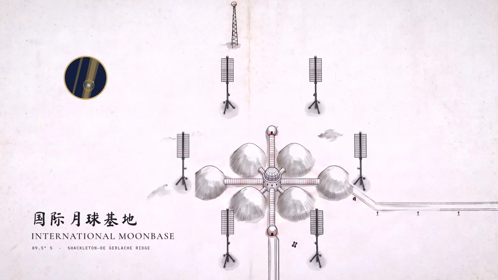
- On the MoonFlown there, or done there
- Tested on EarthBuilt and tried, not yet on the Moon
- PlannedA design, a contract or a proposal
- PhysicsComputed, not invented
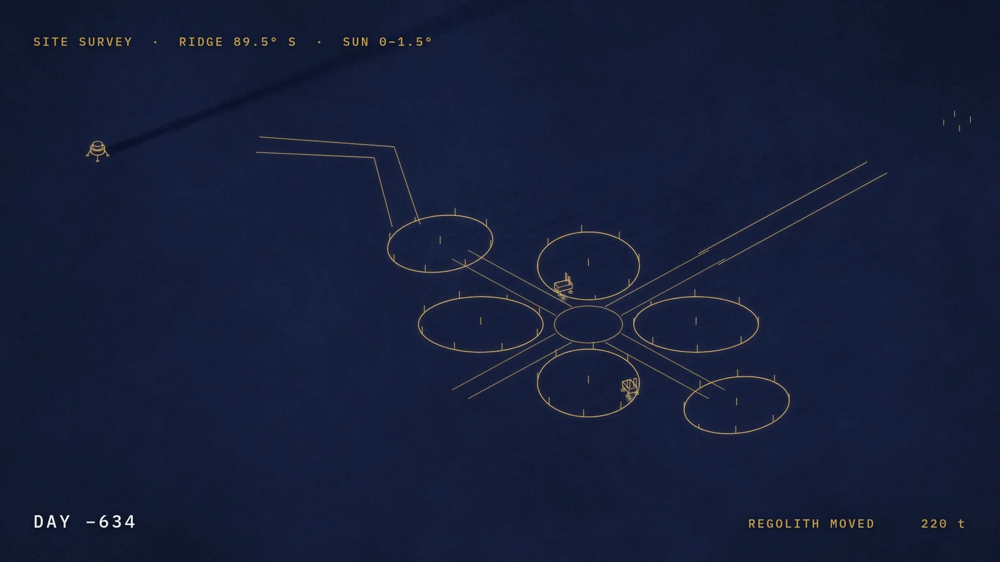
01A ridge in near-constant sunlight
SITE SURVEY · RIDGE 89.5° S · SUN 0–1.5°
The base stands on the ridge joining the craters Shackleton and de Gerlache. The Sun circles the horizon once every 29.5 days without ever climbing, so in the film its bearing turns 12.19° a day and its height stays near 1.2°: a 20 m mast throws a 950 m shadow.
This ridge is some of the best-lit ground near the pole. Over a 19-year simulation, Gläser et al. found spots on it in sunlight 92.3% of the time at 2 m above the ground, and 95.66% at 10 m. Seen from Shackleton’s rim, the Sun “glides around the horizon” (NASA SVS), while nearby permanently shadowed crater floors stay at only tens of kelvin.
Both real programmes target the south polar region: NASA’s Moon Base plan builds toward a permanent outpost from 2032, and the China-led International Lunar Research Station plans a basic model there by 2035 (Xinhua).
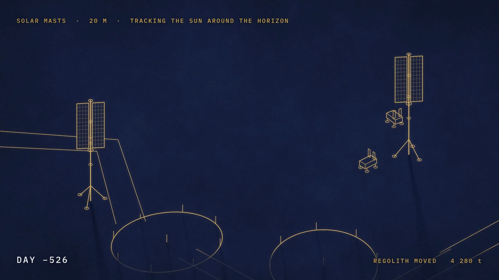
02Solar panels on masts that turn with the Sun
SOLAR MASTS · 20 M · TRACKING THE SUN AROUND THE HORIZON
The panels stand upright, from 10.5 m to 19.5 m above the ground, and turn once a month to follow a Sun that never rises.
NASA’s Vertical Solar Array Technology programme puts arrays on masts to clear the shadows of polar terrain. Its reference design asks for at least 10 kW with the bottom of the array at least 10 m up (NASA Langley). Prototypes from Honeybee and Astrobotic went through vacuum tests at Johnson Space Center in 2024 (NASA).
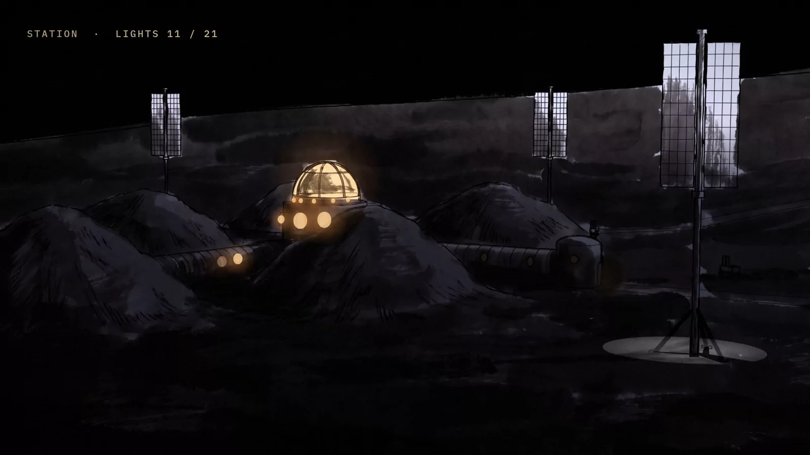
03Modules buried under printed regolith
PRESSURE VESSELS LANDED · 4 MODULES → REGOLITH PRINTER · SHIELD SHELL 2.5 M · ONE 0.6 M COURSE A DAY
The pressure vessels land first; then a gantry prints a 2.5 m shell of Moon soil over each one, a course a day, against radiation and micrometeoroids.
That is the order of a 2013 study by ESA and Foster + Partners: a dome printed from regolith over a pressurised inflatable, with cellular walls. The team printed a 1.5 tonne demonstration block on Earth from simulated regolith with added binders (ESA). NASA’s $57.2 million contract with ICON, running to 2028, is to develop a system that builds “landing pads, habitats, and roads” from local material (NASA).
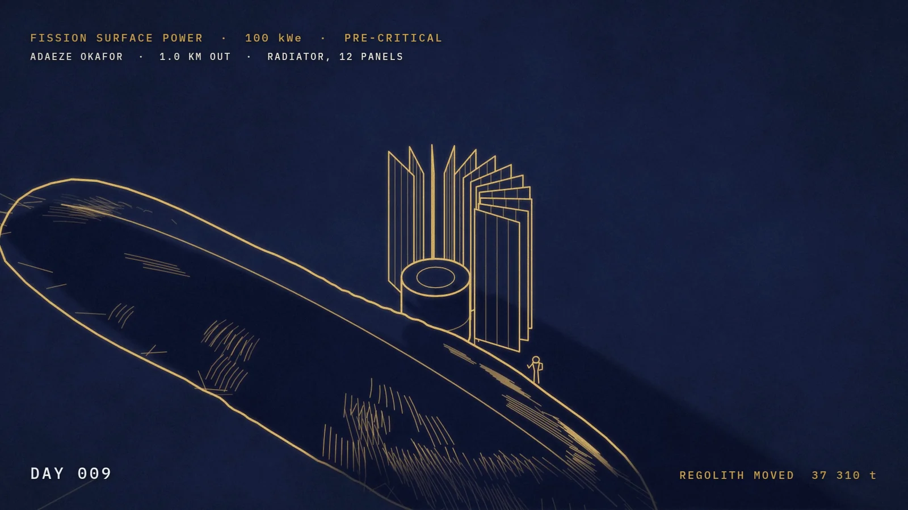
04A small nuclear reactor, a kilometre out
FISSION SURFACE POWER · 100 kWe · PRE-CRITICAL · ADAEZE OKAFOR · 1.0 KM OUT · RADIATOR, 12 PANELS
The sunlight runs out in polar winter and in crater shadow. A reactor does not. An engineer opens its radiator before it has ever been switched on, which is why she can stand beside it.
In 2025 NASA asked industry for a lunar reactor giving “at least 100 kilowatts of electrical power” through a closed Brayton cycle, on the Moon by early fiscal 2030 (NASA Glenn).
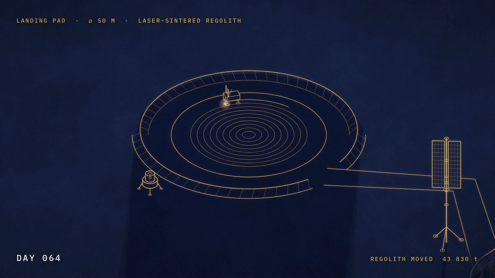
05A landing pad melted into glass, and a lander parked 2 km away
CREW LANDER DOWN · BARE REGOLITH, 2.0 KM EAST · LANDING PAD · ⌀ 50 M · LASER-SINTERED REGOLITH
A rocket landing on bare ground blasts dust and gravel outward like shot. So the first crew land 2 km out, and a rover then circles the pad site once a day, fusing one more dark, glassy pass.
ESA’s PAVER project melted simulated regolith into paving with a 12 kW laser on Earth; its lunar concept would use concentrated sunlight. Apollo 12’s landing beside the Surveyor III probe showed what ejecta does to nearby hardware (Metzger et al.), and in March 2025 NASA’s SCALPSS cameras on Blue Ghost filmed a plume striking the surface (NASA). The 2 km is the film’s choice, not a validated safe distance.
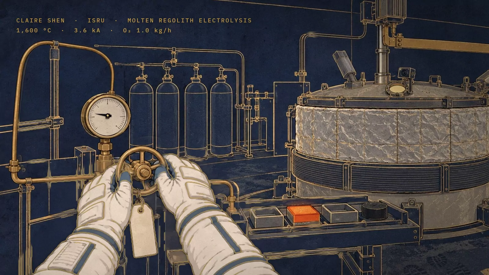
06Breathing air made from rock
CLAIRE SHEN · ISRU · MOLTEN REGOLITH ELECTROLYSIS · 1,600 °C · 3.6 kA · O₂ 1.0 kg/h
Claire’s job is the plant that melts Moon soil and passes a current through it: oxygen comes off, and an iron–silicon alloy collects as metal. By the production’s own arithmetic, most of that oxygen is meant as rocket oxidizer for the ride home, not air to breathe.
Laboratory cells run “near 1600 C” (Sibille, Sadoway et al.). An MIT model sizes a 56.5 kW plant making 10,000 kg of oxygen a year, 1.14 kg an hour (Schreiner, 2015). Each O₂ molecule takes four electrons, so 1.0 kg/h needs 3,350 A; the film’s 3.6 kA means 93% current efficiency.
The real thing is smaller so far. In late 2024 NASA Kennedy and Lunar Resources ran the LR-1 reactor in a vacuum chamber on 25 kg of simulant, electrolysing for nine hours at an average 0.07 kg of oxygen an hour (Toro Medina et al.). The film imagines about fourteen times that rate, all year.
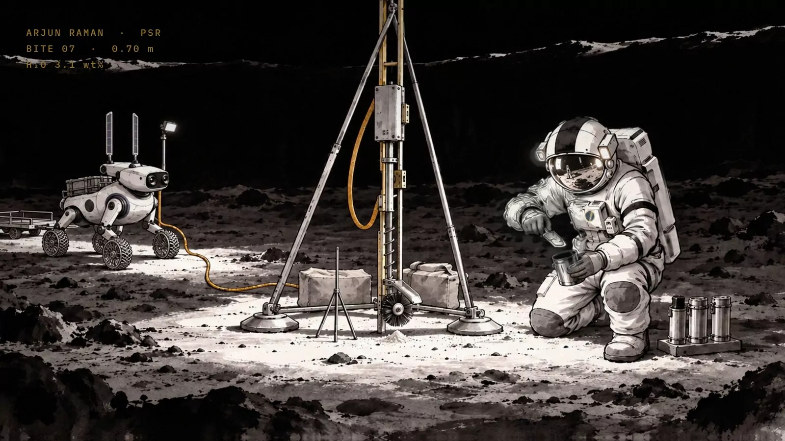
07Drilling for ice in the dark
ARJUN RAMAN · PSR · BITE 07 · 0.70 m · H₂O 3.1 wt%
In a crater that never sees the Sun, the drill brings up its seventh 10 cm “bite”. It stands on its own braced frame, because on the Moon the 70 kg rover weighs only 113 N.
It is drawn after TRIDENT, Honeybee Robotics’ 1 m drill, which works in 10 cm bites and lifts each to the surface as a cone of cuttings (Zacny et al.). TRIDENT reached the Moon on NASA’s PRIME-1 in March 2025; the lander came to rest on its side, and the drill ran through its motions without reaching the ground (NASA). Nobody has yet drilled ice out of a shadowed lunar crater.
LCROSS’s 2009 impact into the crater Cabeus gave a local estimate of 5.6 ± 2.9% water by mass (Colaprete et al.). The film’s 3.1% is an invented reading within that range.
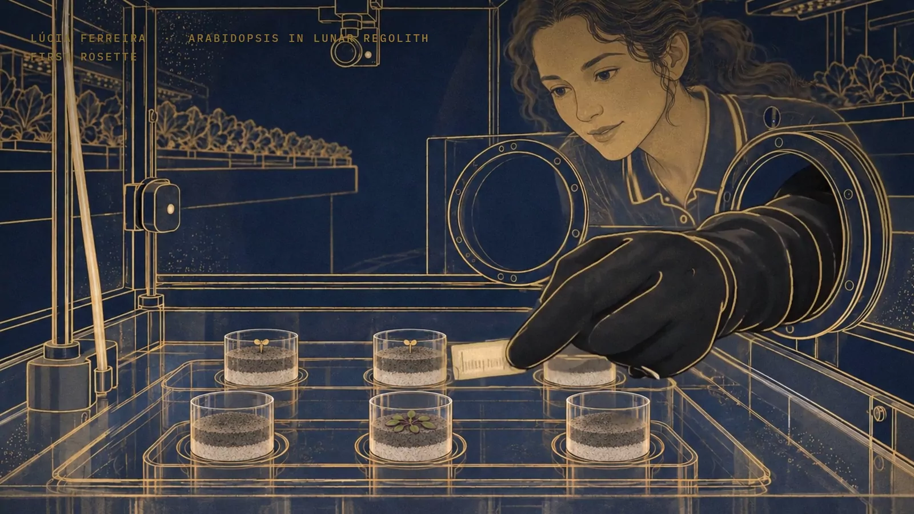
08A plant in Moon soil
LÚCIA FERREIRA · ARABIDOPSIS IN LUNAR REGOLITH · FIRST ROSETTE
In 2022 University of Florida scientists grew Arabidopsis on Earth in regolith from Apollo 11, 12 and 17, about a gram to a well, with water and nutrients added. Nearly all the seeds sprouted; the plants grew smaller and slower than the controls (Paul, Elardo and Ferl). In January 2019 a cotton seed sprouted on the Moon itself, in a sealed experiment aboard Chang’e-4 with soil brought from Earth (Xie et al.). NASA’s LEAF experiment, selected in 2024, is to grow plants on the lunar surface (NASA).
A plant in lunar soil, on the Moon, is the film’s step beyond both. At 3:14 Lúcia gives her grandmother seeds that have been to the Moon and back, as Stuart Roosa carried hundreds of tree seeds around the Moon on Apollo 14 (NASA).
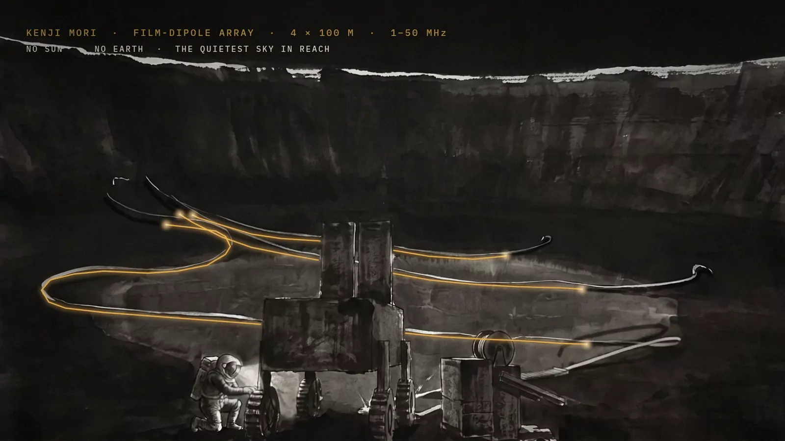
09A radio telescope in the quiet
KENJI MORI · FILM-DIPOLE ARRAY · 4 × 100 M · 1–50 MHz · NO SUN · NO EARTH · THE QUIETEST SKY IN REACH
A rover unrolls four 100 m antennas of thin film on the floor of Shackleton, where the crater walls hide both the Sun and the Earth’s radio noise.
Low-frequency radio astronomy wants the Moon for its silence. LuSEE-Night, built to ride Firefly’s Blue Ghost Mission 2 to the far side, is to listen for the signal of the cosmic Dark Ages (Brookhaven). Shackleton itself has been proposed too: RadioLuna, an array on the crater floor (Eubanks and Blase). The film’s antenna layout and band are invented.
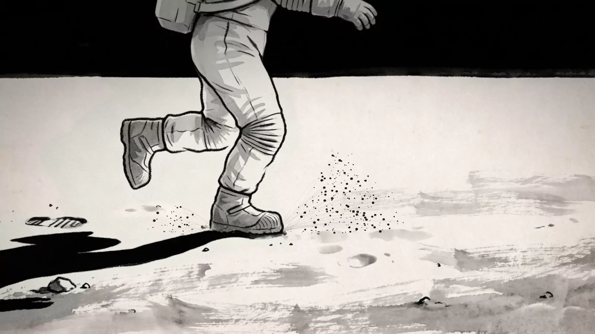
10Dust with no air to hold it
1.62 m/s² · NO AIR · NO CLOUD
A crew member lopes across the regolith. Each grain of dust leaving her boot is integrated under lunar gravity (1.62 m/s²) with no drag: it flies a clean arc, lands and stops. No cloud hangs behind her.
The same rule lights the station. When the lamps come on one by one at 2:21, they show only as hard-edged pools on the ground. With no air, nothing glows around a lamp.
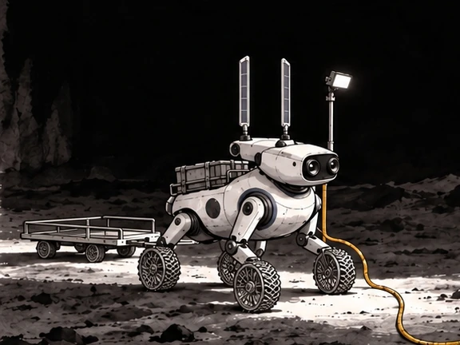
11The Moon rabbits
The base’s small rovers are called Yutu 玉兔, after the rabbit in the Moon of the old story and China’s two real rovers. Yutu-2 landed with Chang’e-4 on the far side in January 2019 and became the longest-lived rover on the Moon (Wikipedia).
The film’s Yutu has wheel-legs and two solar panels for ears. It surveys the site (2:02), runs the reactor’s cable (2:08), stands by at the drill (2:11) and unrolls the radio antennas (2:16).
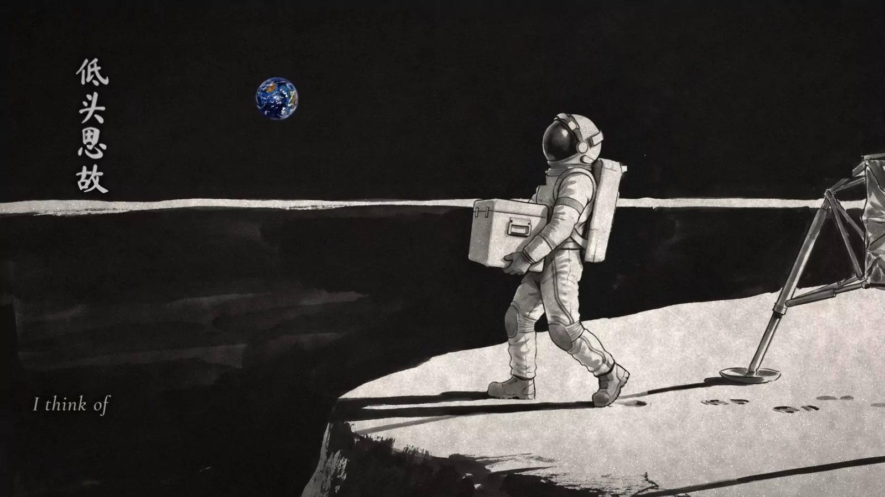
12The Earth, as it really hangs in that sky
No image model paints the Earth. The renderer draws it as a sphere from NASA’s Blue Marble day maps and Black Marble night lights, with its phase, its tilt and the face it shows taken from JPL Horizons for a real date and the base’s real position.
It is small: about two degrees across, nearly four Moons wide in our sky, and still only a thumb at arm’s length. It hangs upside down: from the south pole the Earth appears “upside-down and rotating backwards” (NASA SVS), and the film does not turn it to look familiar. It stays low, bobbing a few degrees above and below one stretch of horizon, which is why the comms tower’s dish (2:05) points almost flat. Its phase is the opposite of the Moon’s: at 2:38 a flight controller sends up his family’s thin crescent Moon, and Claire answers with the Earth she sees that night, nearly full.
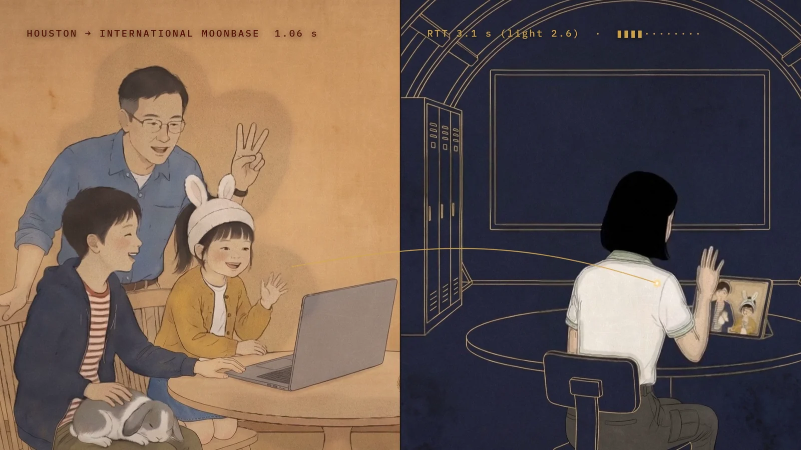
13Calling home, 1.28 seconds away
HOUSTON · SIGNAL +1.3 S · RTT 3.1 s (light 2.6)
The Moon is 384,400 km away on average, 1.28 seconds at the speed of light. During the descent Mission Control watches an altitude that is already 1.3 s old. In the call home, the words cross the split screen as a gold line that takes 1.28 s to arrive; the counter’s extra half second is the production’s allowance for relays and encoding.
Mission Control is staged after the night Curiosity landed on Mars in 2012, when the team scripted its first words because the microphones were live: “Tango Delta nominal”, then “Touchdown confirmed” (JPL). The film’s calls are TOUCHDOWN CONFIRMED and, at splashdown, CREW SAFE.
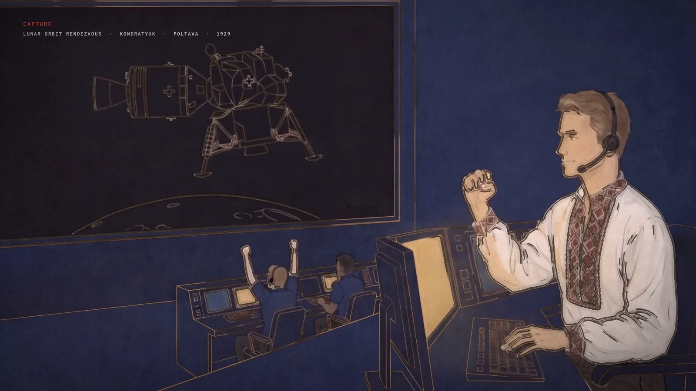
14Getting there: a capsule, a lander, and a rendezvous from 1929
MAX-Q · 3.2 G · TLI COMPLETE · 10.9 KM/S · CAPTURE · LUNAR ORBIT RENDEZVOUS · KONDRATYUK · POLTAVA · 1929
The rocket is a core with two boosters, and the capsule’s escape tower sits directly on it with no fairing, as on China’s Mengzhou, whose escape system was tested at maximum dynamic pressure in February 2026 (Xinhua). China’s programme is building the same three pieces the film uses, a heavy rocket, a capsule and a separate lander, for a landing by 2030 (CASC).
The capsule never lands on the Moon. It meets a lander waiting in lunar orbit, and when the two latch the screen credits Yuri Kondratyuk of Poltava, an early pioneer who in 1929 wrote down the idea of a ship that stays in orbit while a small lander goes down and comes back to it (Linda Hall Library).
The crew trained the way real crews do: NASA’s 12 m pool (NASA), 22-second parabolas of weightlessness (ESA), and the basalt fields of Iceland, where the Artemis II crew trained in 2024 (CSA).
Liberties we took
Where the film parts from the engineering, on purpose:
- One agency. In the film every space programme on Earth builds the base together. Today the NASA-led and China-led lunar efforts are separate, and since 2011 US funding law has limited NASA’s bilateral work with Chinese entities (NASA). The joint programme is an imagined political arrangement.
- A full Moon and a full Earth, cut together. From 1:49 eight homes raise their heads to a full Moon, and at 1:53 the crew look at a full Earth. Those cannot be the same night: the Earth’s phase is the opposite of the Moon’s.
- The Earth is drawn larger than life, 1.2 to 1.3 times, so that it reads on a phone.
- The glass cupola. The modules are under 2.5 m of printed regolith, but the hub’s cupola stands in the open, a glass room where eight people raise a cup to the Earth. The film gives it shutters for solar storms; the production did not calculate the dose.
- The pace. The film assumes 640 days of robotic building before 97 days of crewed work. It is a fictional schedule.
- Distances in the gold drawings. The landing pad and reactor are drawn about 100 m from the hub, on their true bearings, as a palace scroll would. In the station’s layout they are 2 km and 1 km away.
- The oxygen plant makes about fourteen times the rate reported for the LR-1 test, without stopping. The ice reading is invented. A plant in lunar soil on the Moon has not been grown yet.
- The capsule is a hybrid. It has no fairing, like Mengzhou, but splashes down in the sea, as NASA’s Orion does. Mengzhou is designed to land on the ground on airbags.
- The launch is compressed, and 384 400 KM on every crew card is the mean distance; the real figure changes by the hour.
The full tour, with every source and the Earth-view query to repeat in JPL Horizons, is in the README of the film’s source.